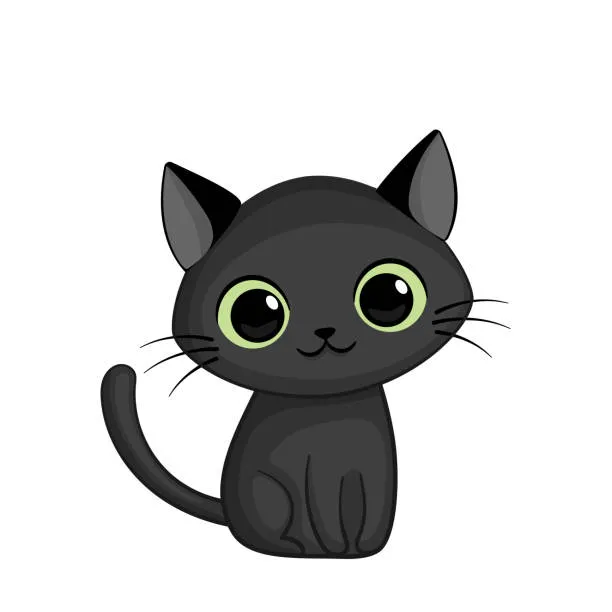

Gatinho Saturno
Eu sou o Gatinho Saturno, sempre curioso pelos corredores do bloco novo de Ciência da Computação, observando tudo o que os alunos estão fazendo. Recentemente, explorei as aulas de LVW, o minicurso do PET de Linguagens Visuais da Web, onde aprendi HTML e CSS. Desde então, fiquei empolgado com esse novo mundo e agora estou focado em desenvolver meu primeiro portfólio, mostrando tudo o que venho aprendendo.